The Figures
Llull's and Bruno's diagrams, rebuilt as working instruments. These are not photographs of woodcuts — each one is drawn from the terms and structure the sources report, which is precisely what lets you turn, select and interrogate them. A scan of a wheel cannot be turned.
Figura A Figure A — the Dignities
A circle of sixteen compartments with transverse lines running from each to every other — what we would now call a complete graph, K16. Llull: all these compartments are concordant with one another, without any contrariety existing between them.
Click any two dignities to form a compartment — the binary unit Llull's arguments are built from. Every pair is concordant, which is the point of the figure.
In the scholarship
This First Figure is circular, with A in the center… [It] is made up of sixteen compartments, with transverse lines extending from one compartment to another to indicate that all these compartments are concordant with one another, without any contrariety existing between them.
Llull describing Figure A in his own words. 'Transverse lines… from one compartment to another' is the complete graph the interactive figure draws — all 120 chords.
Source: Bonner, A User's Guide, corpus lines 237-300; Llull SW I, 320
Original: Bonner, colour plates between pp. 92-93
Figura V Figure V — Virtues and Vices
Seven virtues and seven vices. Blue lines connect all the virtues to each other, red lines all the vices — two complete subgraphs of seven vertices with nothing crossing between them. Bonner notates it D2/7.
Toggle the two subgraphs. Nothing connects blue to red — the separation is the figure's whole claim, and it is why blue V and red V work as shorthand throughout the Art.
Source: Bonner, corpus lines 613-636
Original: Bonner, colour plates between pp. 92-93
Figura X Figure X — Opposed Pairs
Sixteen concepts which Llull habitually uses as eight opposed pairs, each concept facing its contrary across the circle.
Click a pair to see the contradiction it poses. The first — predestination against free will — is the one worked through in the Art Engine.
Source: Bonner, corpus lines 680-706
Original: Bonner, colour plates between pp. 92-93
Figura S Figure S — the Soul
Bonner: a circle with four inscribed squares, notated D4/4. Each square is one species of the soul — E, I, N, R — and each carries one act of memory, one of intellect, one of will.
Click a square to see its triple. E and I are goal states; R is confusion, and it is reachable. This is the figure the Art Engine runs on.
In the scholarship
to get the user, or rather the S of the user, to remember, understand and love (E) God (A), virtues (blue V), and the truth (Y), while remembering, understanding, and hating (I) the vices (red V) and falsehood (Z)
The clearest statement anywhere that the Art's output is a change in the operator, not a retrieved fact. It is the sentence the whole soul-state engine rests on.
a figure that begins by being dynamic and combinatory
Figure S is built from the acts of memory, intellect and will rather than from the static faculties — which is precisely what makes it implementable as a state machine.
R represents a state of intellectual or spiritual confusion, with all positive and negative possibilities open.
Confusion is a named, defined state in the system rather than a failure of it — which is why the engine treats R as the third stage of four rather than as losing.
Source: Bonner, corpus lines 1579-1680
Original: Bonner, colour plates between pp. 92-93
Atrium Bruno's Atrium
A quadrangle whose centre is the earth and the eye. Four corners and four mid-sides give eight points; each point carries a right and a left collateral, giving twenty-four positions. Twenty-four such atria give 576 addressable loci.
Click any position to see what Bruno assigns there, and switch between all 24 atria. The Altar's position mapping is attested in prose; the rest are reconstructed from plate order and marked as such.
In the scholarship
let the atrium be viewed as a quadrangular shape, whose center is the earth and the eye
The centre of the memory space and the centre of the world are one point. The operator stands where the earth stands — a microcosm claim, not a figure of speech.
so that it brings an image or form to life and makes it prosper
Why the adjective places exist. Animation is a technical requirement of the architecture — a static image does not hold attention, and attention is what memory follows.
Let the atria be constituted after the number of the twenty four elements
The atria are counted to match the letters of the alphabet, not chosen for their meanings. That is why the list runs from altar and basilica to the Pythagorean fork and the key of jealousy.
Source: De imaginum, Bk I Pt 2 chs 3-6 (Higgins trans.), corpus lines 1257-1400
Original: Higgins trans., diagram plates from p. 24 (37 images in that edition)
Rota The Combinatorial Wheel
Concentric rotating rings — the mechanism Llull's Ars Magna bequeathed to Bruno. The outer ring carries letter-keys; the inner ring carries the operators each key commands. Rotating aligns a key with an operator.
Step or drag the rings to align a letter-key with an operator. This is the general mechanism, populated with Bruno's attested alphabet.
Caveat. This is NOT a reconstruction of Bruno's own wheel. His specific ring assignments live in De umbris idearum, which is not in this corpus — and their correct arrangement is the single most contested question in the scholarship, the thing Yates reconstructed and Sturlese corrected in 1991. What is shown is the general mechanism driven by attested alphabet data.
In the scholarship
Giordano Bruno who saw it as a way to explore the connections among his infinity of worlds
Bonner's only substantive mention of Bruno, and it is cosmological rather than mnemonic. It is the evidence that settled the attribution question: the soul-state engine is Llull's, not Bruno's.
Not only were their aims different, but the use they made of Llull's techniques varied from something vaguely similar to something entirely different
An explicit warning against assuming that what Llull built is what Bruno used. It is why the combinatorial wheel here is labelled a reconstruction of the mechanism and not of Bruno's own wheel.
In Lullism the principia essendi et cognoscendi were the same, and the ladder of being could be climbed and descended through the similitudines of the creatures with divine perfections.
The doctrine that licenses the composition rules in Logica Fantastica: if the principles of being and of knowing are the same, then an image's likeness carries genuine inferential weight.
he was eager to translate also this logic to the language of the Aristotelian scholarly philosophy and, from there, make it comprehensible
On De compendiosa architectura et complemento artis Lullii. Bruno recast Llull in Aristotelian terms rather than preserving his notation — corroborating that Figure S did not travel.
Source: Driven by the harvested image alphabet (De imaginum chs 12-13)
Original: Bruno's own wheel diagrams are in De umbris idearum, which is NOT in this corpus
The Plates
The figures as they were actually printed. These are photographic reproductions of woodcuts from 1585–1591 — long out of copyright, and a faithful reproduction of a flat public-domain artwork carries no new authorship. No editorial apparatus is reproduced; the edition each scan comes from is credited. Click any plate to open it full size.
Memory architecture
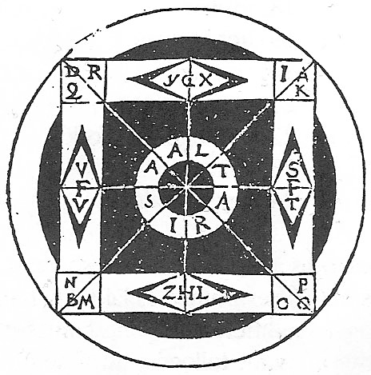
Bruno's atrium as printed: a circle enclosing a square, with ALTA/RIS at an eight-spoked hub, letter-groups at the four corners and lozenges at the mid-sides. This is the figure the interactive atrium above reconstructs.
De imaginum, signorum et idearum compositione (1591) · scan from the edition at p. 56
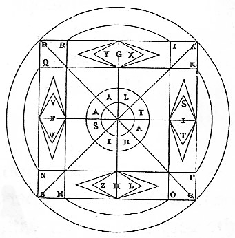
The atrium, second version
identifiedThe companion plate. Higgins prints two versions of the atrium diagram — the 1591 printing and Tocco's — which is the textual variant seeded as a playable alternative.
De imaginum (1591); cf. Tocco's edition · scan from the edition at p. 56
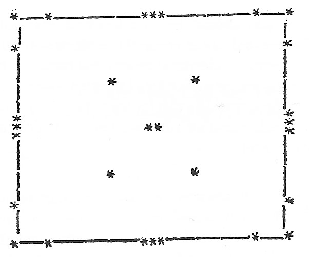
Bounded field with markers
identifiedA ruled rectangle with asterisk markers at the margins and five within. One of the schematic place-figures of the first book.
De imaginum (1591) · scan from the edition at p. 73
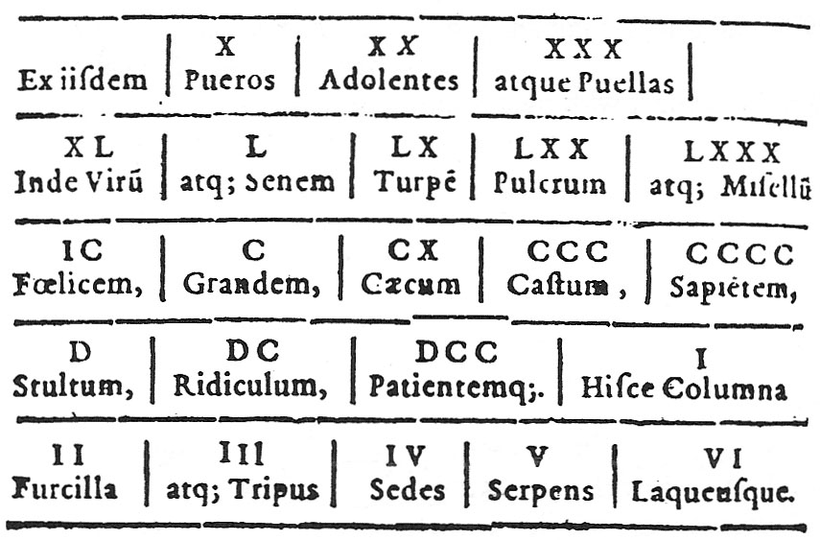
Roman numerals mapped to figures: X a boy, XX a youth, XXX a girl, L an old man, LX the ugly, LXX the beautiful, C the great, CX the blind, D the foolish — and I a column, II a little fork, III a tripod, IV a seat, V a serpent, VI a noose. A number alphabet to set beside the letter alphabet.
De imaginum (1591) · scan from the edition at p. 157
In the scholarship
let the atrium be viewed as a quadrangular shape, whose center is the earth and the eye
The centre of the memory space and the centre of the world are one point. The operator stands where the earth stands — a microcosm claim, not a figure of speech.
so that it brings an image or form to life and makes it prosper
Why the adjective places exist. Animation is a technical requirement of the architecture — a static image does not hold attention, and attention is what memory follows.
Let the atria be constituted after the number of the twenty four elements
The atria are counted to match the letters of the alphabet, not chosen for their meanings. That is why the list runs from altar and basilica to the Pythagorean fork and the key of jealousy.
The planetary chariots
Each deity rides in a chariot with his zodiacal houses on the wheels. These are the courts harvested in the image-courts — Saturn drawn by dragons with his scythe, whose retinue in the text is the melancholic afflictions; Jupiter by eagles; the Sun crowned and radiant with Leo on the wheel. Three are identified below by reading the plate; the rest are published by page rather than guessed at from position in the sequence.
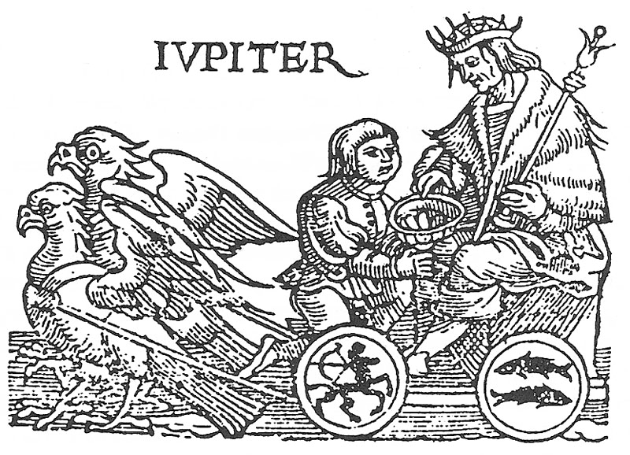
Jupiter enthroned in his chariot, drawn by eagles, sceptre in hand; his zodiacal houses ride on the wheels.
De imaginum (1591) · scan from the edition at p. 107
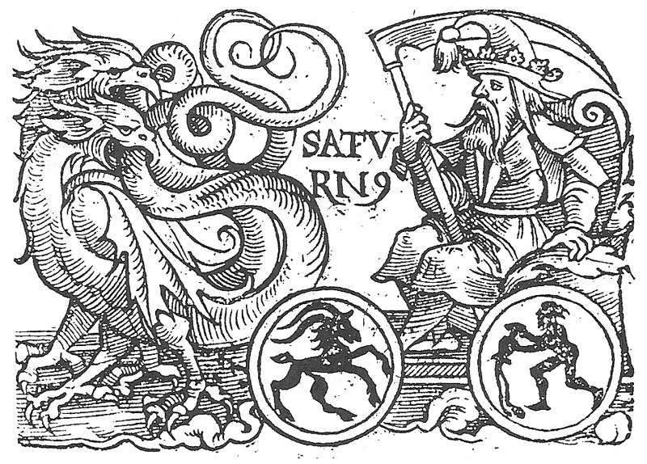
Saturn with the scythe, drawn by dragons, Capricorn and Aquarius on the wheels. His retinue in the text is the melancholic afflictions — Grief, Care, Decay, Death.
De imaginum (1591) · scan from the edition at p. 115
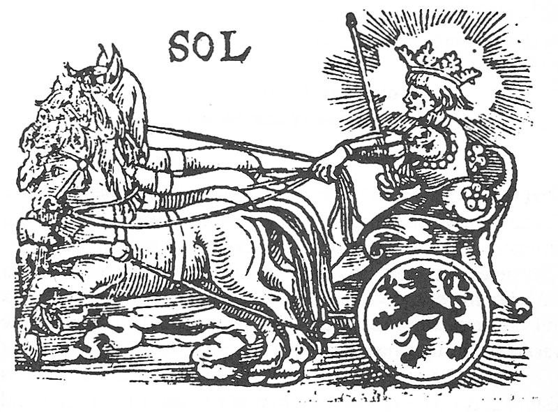
The Sun crowned and radiant, horse-drawn, with Leo on the wheel.
De imaginum (1591) · scan from the edition at p. 135
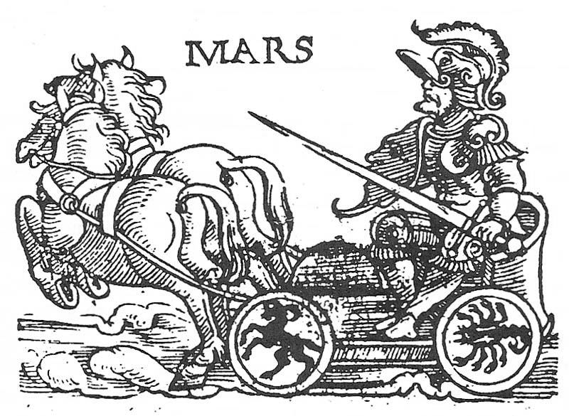
Chariot plate, p. 118
unidentifiedFrom the same series of deity chariots. Not visually identified here, so it is not given a name — the text's order of courts runs Jove, Saturn, Mars, Mercury, Sol, Luna, Venus, Tellus, Pluto, but inferring from position alone would be a guess.
De imaginum (1591) · scan from the edition at p. 118
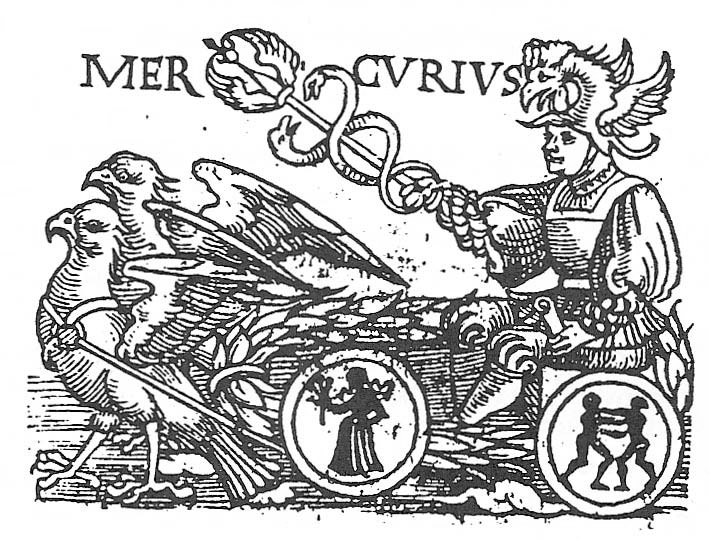
Chariot plate, p. 126
unidentifiedFrom the same series of deity chariots. Not visually identified here, so it is not given a name — the text's order of courts runs Jove, Saturn, Mars, Mercury, Sol, Luna, Venus, Tellus, Pluto, but inferring from position alone would be a guess.
De imaginum (1591) · scan from the edition at p. 126
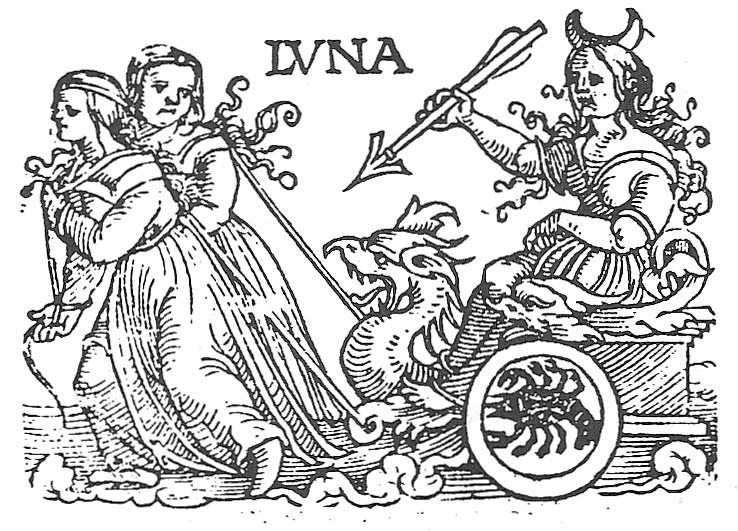
Chariot plate, p. 139
unidentifiedFrom the same series of deity chariots. Not visually identified here, so it is not given a name — the text's order of courts runs Jove, Saturn, Mars, Mercury, Sol, Luna, Venus, Tellus, Pluto, but inferring from position alone would be a guess.
De imaginum (1591) · scan from the edition at p. 139
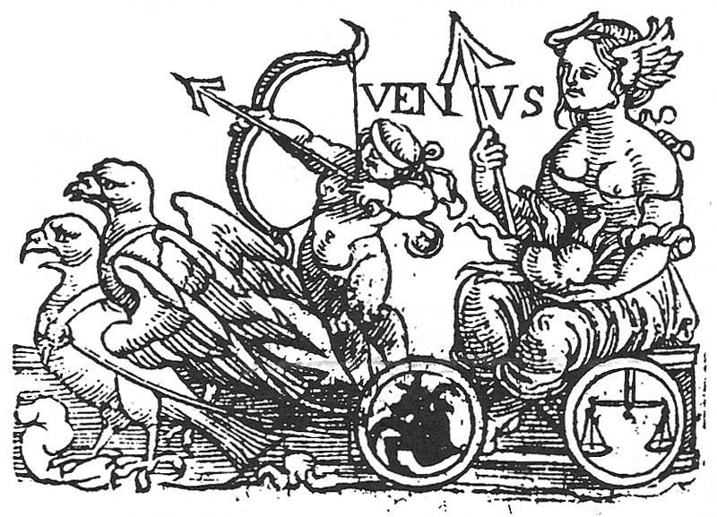
Chariot plate, p. 145
unidentifiedFrom the same series of deity chariots. Not visually identified here, so it is not given a name — the text's order of courts runs Jove, Saturn, Mars, Mercury, Sol, Luna, Venus, Tellus, Pluto, but inferring from position alone would be a guess.
De imaginum (1591) · scan from the edition at p. 145
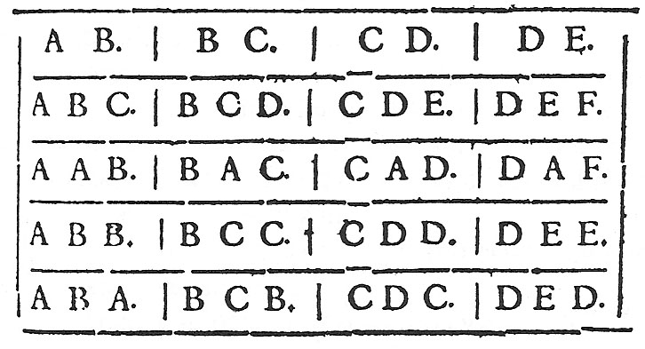
Chariot plate, p. 167
unidentifiedFrom the same series of deity chariots. Not visually identified here, so it is not given a name — the text's order of courts runs Jove, Saturn, Mars, Mercury, Sol, Luna, Venus, Tellus, Pluto, but inferring from position alone would be a guess.
De imaginum (1591) · scan from the edition at p. 167
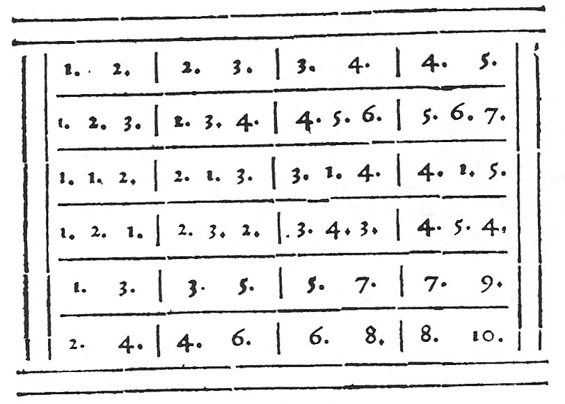
Chariot plate, p. 168
unidentifiedFrom the same series of deity chariots. Not visually identified here, so it is not given a name — the text's order of courts runs Jove, Saturn, Mars, Mercury, Sol, Luna, Venus, Tellus, Pluto, but inferring from position alone would be a guess.
De imaginum (1591) · scan from the edition at p. 168
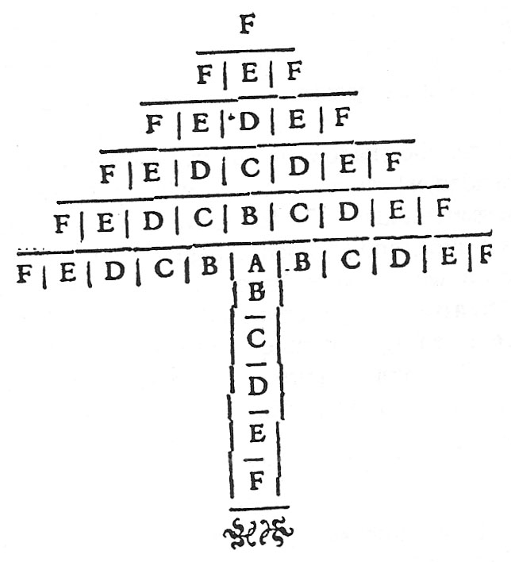
Chariot plate, p. 170
unidentifiedFrom the same series of deity chariots. Not visually identified here, so it is not given a name — the text's order of courts runs Jove, Saturn, Mars, Mercury, Sol, Luna, Venus, Tellus, Pluto, but inferring from position alone would be a guess.
De imaginum (1591) · scan from the edition at p. 170
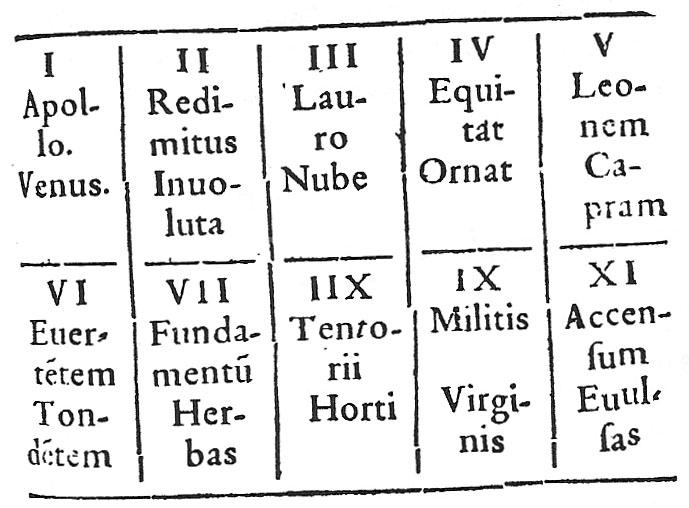
Chariot plate, p. 173
unidentifiedFrom the same series of deity chariots. Not visually identified here, so it is not given a name — the text's order of courts runs Jove, Saturn, Mars, Mercury, Sol, Luna, Venus, Tellus, Pluto, but inferring from position alone would be a guess.
De imaginum (1591) · scan from the edition at p. 173
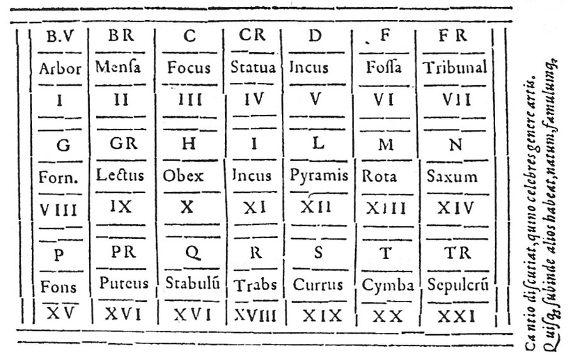
Chariot plate, p. 175
unidentifiedFrom the same series of deity chariots. Not visually identified here, so it is not given a name — the text's order of courts runs Jove, Saturn, Mars, Mercury, Sol, Luna, Venus, Tellus, Pluto, but inferring from position alone would be a guess.
De imaginum (1591) · scan from the edition at p. 175
In the scholarship
the magical allusions in his mnemonic treatises are certainly not of a natural kind. They belong to mathematical or even theurgical magic.
Against reading the memory works as merely technical. Mertens holds the magic in them is real and specific — and not the safe, naturalistic kind.
A shadow I judge to be the image of Grief will pass by, with veiled face, whence tear drops appear to rain down in tight streams upon the ground. Next to her stand Consternation, Sorrow of the Heart, Mourning, Distress, Bitterness, Complaint…
How a Brunian image is actually built: a central personified figure, a named retinue, and enough affective charge to seize the attention. Grief belongs to Saturn's court.
Emblems and geometrical figures
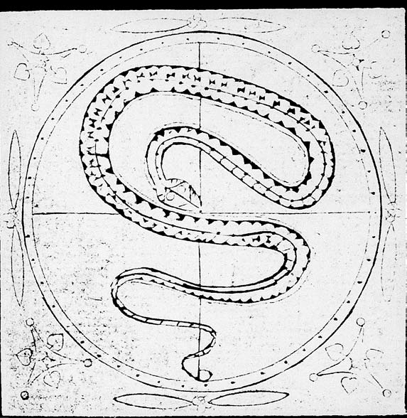
Serpent medallion
identifiedA serpent coiled within a bordered roundel, with foliate corner ornaments. An emblematic figure of the kind Bruno's seal and image treatises turn on.
Reproduced in Gatti (ed.), Essays on Giordano Bruno · scan from the edition at p. 120
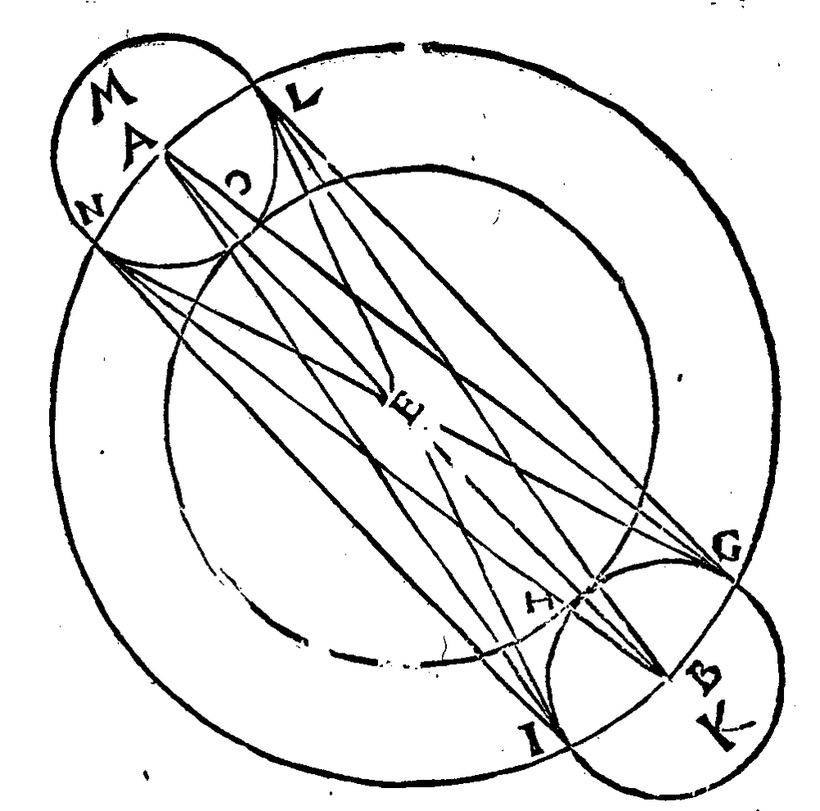
Lettered geometrical figure
identifiedIntersecting circles with lettered points (A, B, E, G, H, I, K, L, M, N, O) and chords drawn between them — the style of demonstration Bruno's geometrical and cosmological works use.
Reproduced in Gatti (ed.), Essays on Giordano Bruno · scan from the edition at p. 83
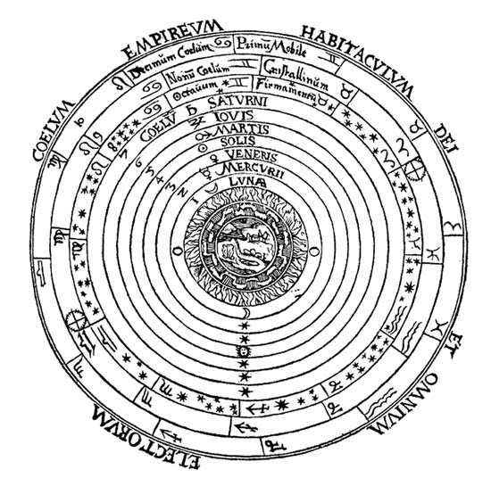
Figure, Essays p. 66
unidentifiedA further figure from the same plate section. Not visually identified, and therefore not captioned beyond its source.
Reproduced in Gatti (ed.), Essays on Giordano Bruno · scan from the edition at p. 66
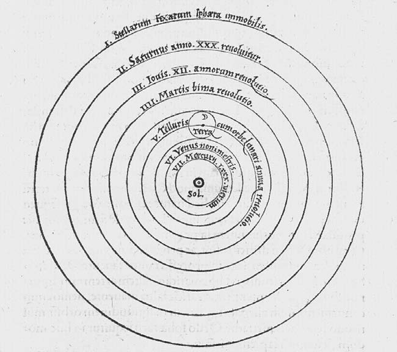
Figure, Essays p. 67
unidentifiedA further figure from the same plate section. Not visually identified, and therefore not captioned beyond its source.
Reproduced in Gatti (ed.), Essays on Giordano Bruno · scan from the edition at p. 67
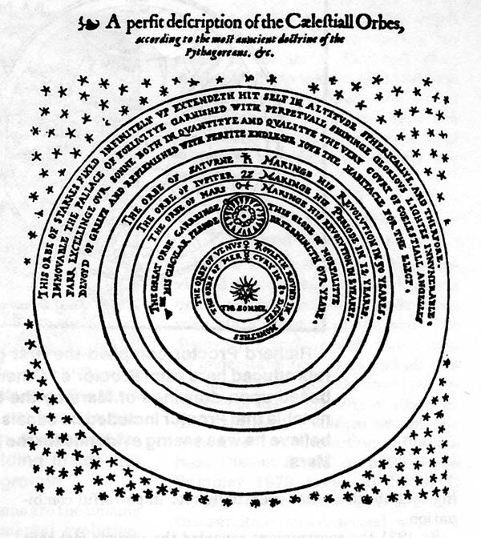
Figure, Essays p. 68
unidentifiedA further figure from the same plate section. Not visually identified, and therefore not captioned beyond its source.
Reproduced in Gatti (ed.), Essays on Giordano Bruno · scan from the edition at p. 68
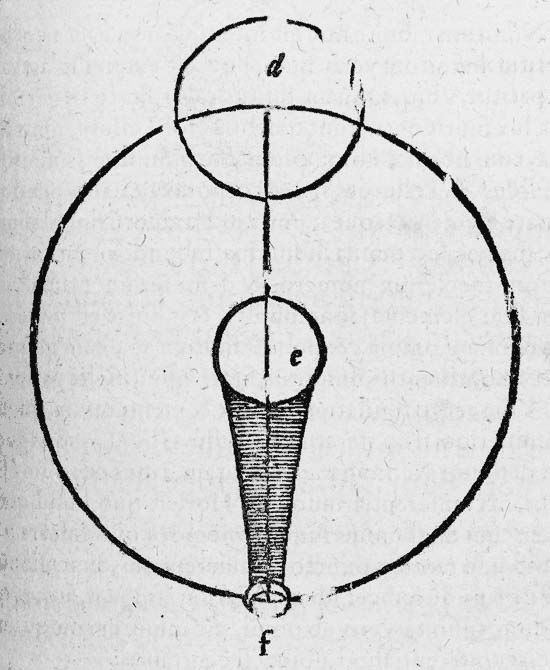
Figure, Essays p. 73
unidentifiedA further figure from the same plate section. Not visually identified, and therefore not captioned beyond its source.
Reproduced in Gatti (ed.), Essays on Giordano Bruno · scan from the edition at p. 73
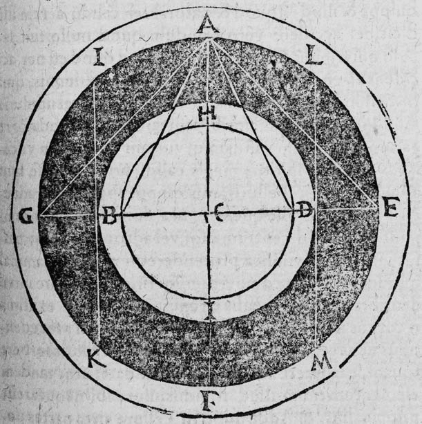
Figure, Essays p. 79
unidentifiedA further figure from the same plate section. Not visually identified, and therefore not captioned beyond its source.
Reproduced in Gatti (ed.), Essays on Giordano Bruno · scan from the edition at p. 79
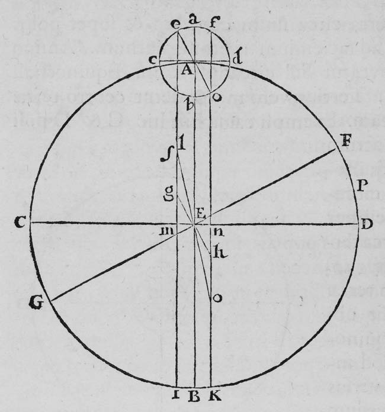
Figure, Essays p. 82
unidentifiedA further figure from the same plate section. Not visually identified, and therefore not captioned beyond its source.
Reproduced in Gatti (ed.), Essays on Giordano Bruno · scan from the edition at p. 82
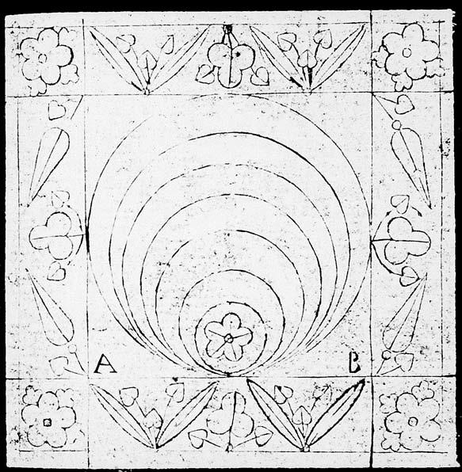
Figure, Essays p. 117
unidentifiedA further figure from the same plate section. Not visually identified, and therefore not captioned beyond its source.
Reproduced in Gatti (ed.), Essays on Giordano Bruno · scan from the edition at p. 117
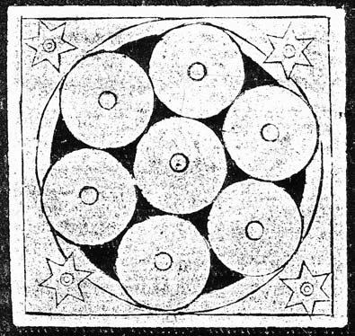
Figure, Essays p. 121
unidentifiedA further figure from the same plate section. Not visually identified, and therefore not captioned beyond its source.
Reproduced in Gatti (ed.), Essays on Giordano Bruno · scan from the edition at p. 121
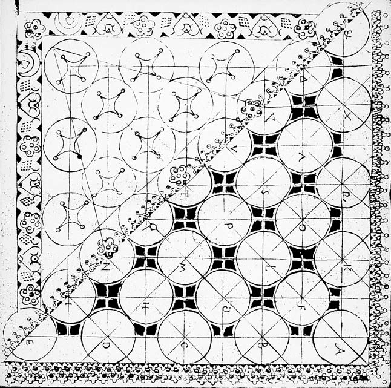
Figure, Essays p. 124
unidentifiedA further figure from the same plate section. Not visually identified, and therefore not captioned beyond its source.
Reproduced in Gatti (ed.), Essays on Giordano Bruno · scan from the edition at p. 124
Not reconstructed
Three figures this project will not draw, and why. Approximating them would produce plausible-looking diagrams that are substantially invented — the exact failure the rest of the site is built to avoid.
Figura T
Five interlocking triangles (Bonner: D5/3). The vertex terms are shredded by column-flattening in the text extraction — legible fragments include object, reason, medium, demonstration, privation and blame, but not reliably enough to place them. Approximating would produce a plausible-looking figure that is substantially invented.
Would need: Bonner's printed colour plate, or a clean edition of the figure.
The De umbris memory wheel
Bruno's concentric wheel and its planetary ring positions are the most contested object in the scholarship — what Yates reconstructed and Sturlese corrected in 1991. Neither De umbris nor Sturlese's edition is in this corpus, so there is no basis for drawing either version.
Would need: Sturlese's 1991 critical edition; Yates's The Art of Memory for the superseded reconstruction.
The Eroici furori emblems
Pictorial rather than geometric — figures, landscapes, Actaeon and the hounds. These cannot be rebuilt from structural data the way a graph can; they have to be reproduced photographically.
Would need: Public-domain scans of the 1585 edition. See the sourcing note on the gallery page.
Sourcing the pictorial originals. The Eroici furori emblems and Bruno’s printed wheels are pictorial and cannot be rebuilt from structural data. The 1585 and 1591 editions are long out of copyright, and scans are held by the Internet Archive, Wikimedia Commons and the Warburg Institute; those are the places to source them from. This site does not rehost scans taken from modern scholarly editions, whose typography and apparatus are in copyright even where the underlying woodcut is not.